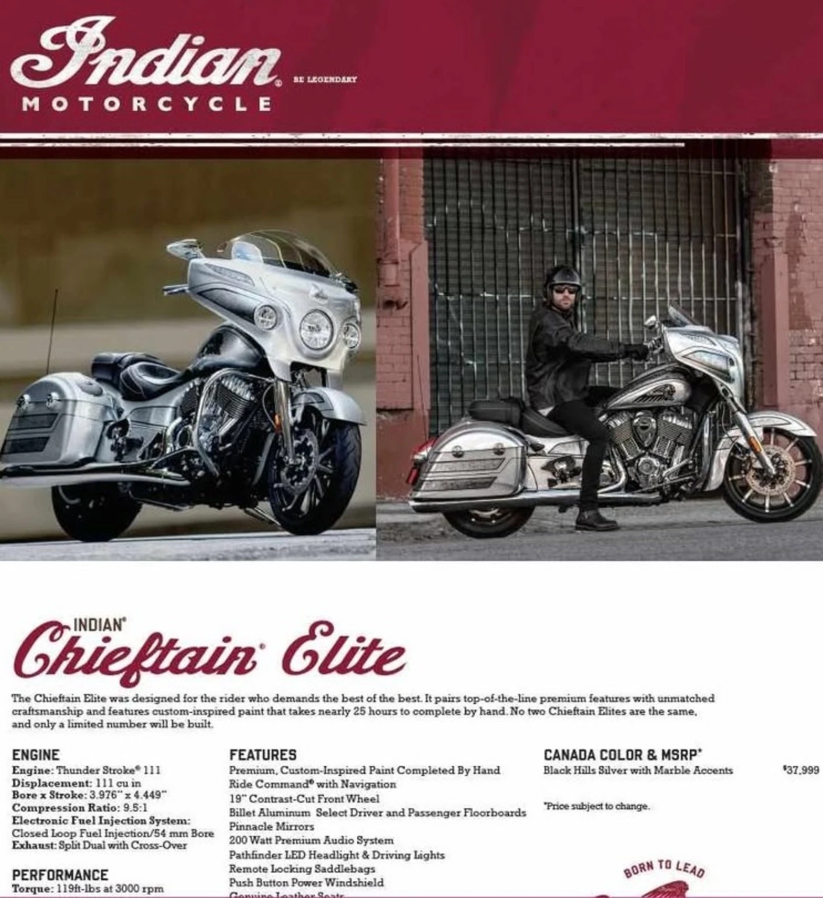

Linguistic case study · Web localization · Product content
Polaris Industries
Localizing website and product content for Polaris Industries from US English into Canadian French, across multiple assignments combining translation, full machine-translation post-editing and proofreading.
About the Client
An American powersports manufacturer
Polaris Inc., formerly known as Polaris Industries Inc., is an American manufacturer of powersports vehicles headquartered in Medina, Minnesota. Founded in 1954, the company designs and manufactures snowmobiles, all-terrain vehicles, off-road vehicles, motorcycles, boats and related accessories. Its portfolio includes well-known brands such as RANGER, RZR, Indian Motorcycle and Slingshot, serving recreational, commercial and industrial markets worldwide.
Project overview
Localizing product information across multiple assignments
I worked on a series of related assignments involving Polaris website content and product documentation. The work covered several types of linguistic services and was delivered in separate batches over a period of several months. Together, these assignments account for 30,638 words handled from US English into Canadian French.
The content went beyond general website copy. It included descriptive and promotional material, technical specifications, product features and commercial information intended for the Canadian market. This meant working with different writing registers within the same broader brand environment: persuasive product descriptions, precise mechanical information, equipment terminology and market-specific details.
I have grouped these assignments into one case study to show the overall scope of my work while preserving the distinction between individual deliveries and the services I performed.
The Challenge
Balancing product language, technical accuracy and commercial clarity
Powersports content brings together terminology from several areas. A product description may introduce a vehicle's identity and positioning, while its technical information specifies engine characteristics, performance figures and mechanical components. Feature lists describe equipment and functionality, and commercial sections communicate available finishes, pricing and market-specific information.
I had to account for these different purposes when working with the content. Promotional language needed to remain engaging and natural in Canadian French. Technical descriptions called for precision in terminology, units and numerical information. Commercial details also had to remain clear and appropriate to their intended market.
Some of the considerations involved were:
- Preserving product names, brand names and established designations.
- Maintaining consistency in vehicle categories, equipment terminology and technical descriptions.
- Distinguishing promotional copy from specifications and functional feature descriptions.
- Rendering measurements, performance figures and mechanical terminology accurately.
- Keeping commercial information, including Canadian pricing references, clear.
- Maintaining continuity across separate batches and different linguistic service types.
The multi-batch structure added another consideration: related content needed to remain coherent even when individual assignments were handled separately.
Scope of Work
Three complementary linguistic services
My Polaris assignments covered three distinct services.
I translated source content from US English into Canadian French, carried out full post-editing on machine-translated material and proofread a separate group of deliveries. These services involved different responsibilities, so I have kept their respective volumes distinct rather than presenting them as one uniform workflow.
Documented word count
| Service | Word count |
|---|---|
| Translation | 1,682 |
| Full machine-translation post-editing (MTPE) | 18,156 |
| Proofreading | 10,800 |
| Total | 30,638 |
Product Content in Context
From promotional descriptions to technical specifications
One of the available English source documents provides a concrete example of the product material involved. It presents the Indian Chieftain Elite, combining promotional copy, vehicle specifications, equipment descriptions and Canadian commercial information.

The introductory text positions the model as a premium motorcycle, emphasizing its craftsmanship, distinctive hand-finished paint and exclusive production. This type of content calls for a promotional tone that communicates the product's positioning without becoming awkward or overly literal in the target language.
The document then moves into technical information. Its engine section identifies the Thunder Stroke 111 engine and presents details such as displacement, bore and stroke, compression ratio and electronic fuel injection. A separate performance section gives the engine torque figure. These elements require precision in technical terminology, units and numerical information.
The features section introduces another vocabulary layer. It lists equipment and functions such as Ride Command with navigation, a contrast-cut front wheel, billet aluminium components, driver and passenger floorboards, mirrors, a premium audio system, LED lighting, remote-locking saddlebags and a power windshield.
Finally, the Canadian commercial section identifies a specific colour finish—Black Hills Silver with Marble Accents—and displays a Canadian suggested retail price.
This source document illustrates the range of information I had to consider when localizing product content: brand language, technical detail, equipment terminology and market-specific commercial information within a single product presentation.
A Featured Sequence
The Snow product line across three deliveries
One of the most substantial components of my Polaris work was a three-part sequence for the Snow product line. I handled the three parts as separate deliveries within the same related project. All three involved full machine-translation post-editing.
| Delivery | Word count | Service |
|---|---|---|
| Snow — Part 1 of 3 | 2,922 | Full MTPE |
| Snow — Part 2 of 3 | 6,539 | Full MTPE |
| Snow — Part 3 of 3 | 2,898 | Full MTPE |
| Combined sequence | 12,359 |
Together, these deliveries represent 12,359 words, a significant portion of the overall Polaris volume. I have presented them as one sequence to make their relationship clear without treating them as three unrelated projects.
Working with related product content in separate batches calls for attention to recurring product references, category terminology and technical information. The Snow sequence provides a concrete example of this multi-delivery structure.
Linguistic Considerations
Consistency across content types and service stages
The Polaris assignments brought together content with different linguistic purposes and three distinct service types. A promotional description, an engine specification and a feature list do not communicate in the same way. Each requires an appropriate balance of tone, terminology and precision while remaining part of a recognizable product presentation.
I have also kept translation, full MTPE and proofreading separate in the project breakdown. This distinction matters because each service represents a different contribution to the documented body of work.
The available records establish the services, word counts, language direction, grouped period and Snow sequence. They do not identify the specific CAT tools, translation memories or project-specific quality checks used for each Polaris assignment, so I have not attributed any unverified tools or procedures to this project.
What the Assignment Required
More than translating individual product descriptions
Through these assignments, I worked on 30,638 words of website content and product documentation, combining translation, full MTPE and proofreading. The three-part Snow sequence alone accounts for 12,359 words.
This work brought together promotional descriptions, mechanical specifications, equipment features and Canadian commercial information. Each required me to consider not only linguistic accuracy, but also the purpose of the content and the terminology appropriate to its context.
My goal was to produce Canadian French content that communicates product information clearly while respecting the distinctions between product language, technical details and commercial messaging.
A localized product experience depends on more than accurate individual texts. Product identity, technical information and commercial details must remain clear and compatible across the wider body of content.